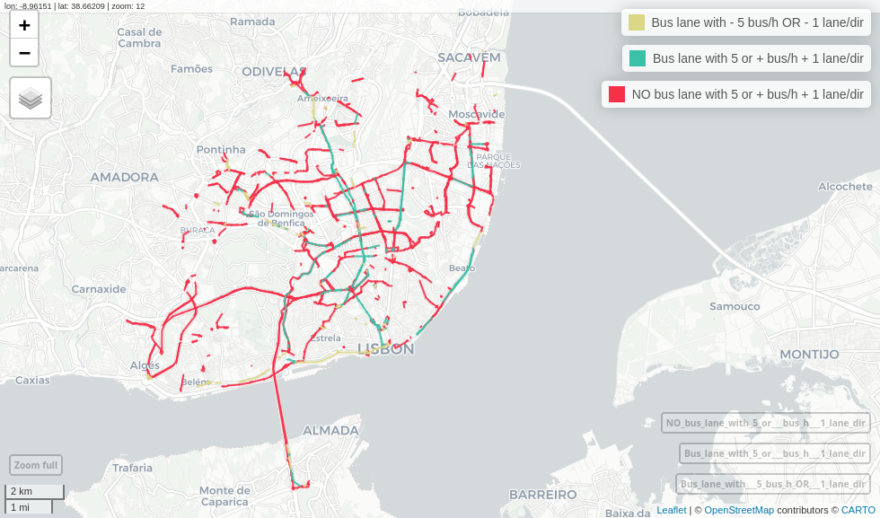

GTFShift emerged from the necessity to understand how to get an overview of where bus lanes should be prioritized for a given territory, using General Transit Feed Specification (GTFS) and OpenStreetMap (OSM) data.
It provides a comprehensive bundle of methods that cover several dimensions of this problem, namely:
- Frequency of buses (and trams) per hour and direction, at a peak hour;
- Number of lanes in the same direction;
- Existing traffic conditions;
- Existing bus lanes in the area (from a network continuity perspective).
Together, these can be used to identify road segments where bus lanes should be implemented, enabling for a transparent and data-driven decision-making process, suitable to different contexts and criteria.

Example of bus lane prioritization analysis for Lisbon city, considering road segments with a minimum frequency of 10 buses/hour, average commercial speed below 9.7 km/h and more than 1 lane per direction.
Installation
You can install the development version of GTFShift from GitHub with:
# install.packages("remotes")
remotes::install_github("U-Shift/GTFShift")Get started
For more details on the package and how to get started, please visit the Get started page.
Dashboard
GTFShift provides an interactive dashboard that allows users to explore and visualize results for real case studies, aiming to illustrate its potential and capabilities to a non-technical audience, while disseminating the outputs of these real world scenarios.
Visit it at ushift.pt/apps/gtfshift.
Acknowledgement
GTFShift is developed and maintained by U-Shift urban mobility research group, part of CERIS research unit, at Instituto Superior Técnico, Lisbon, Portugal.